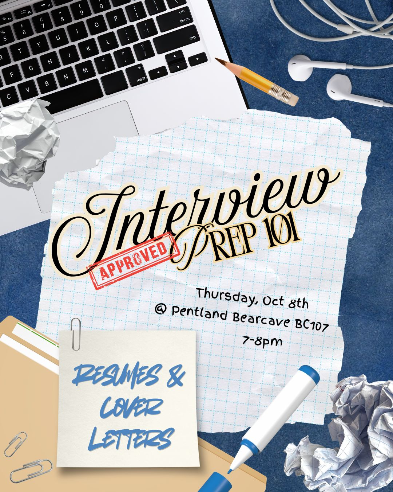
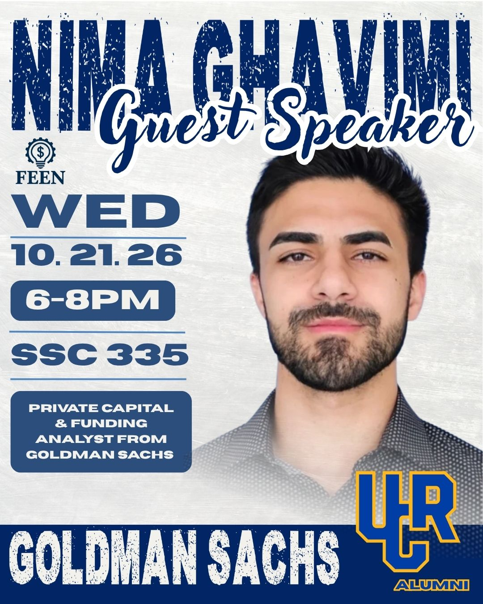
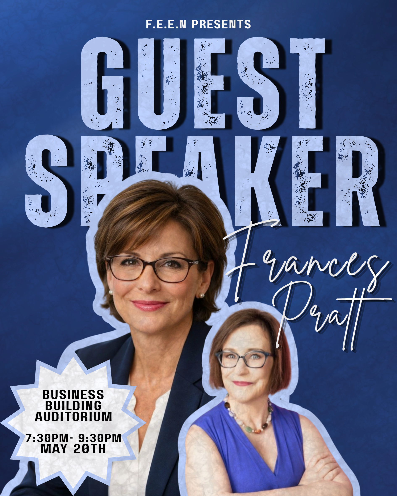
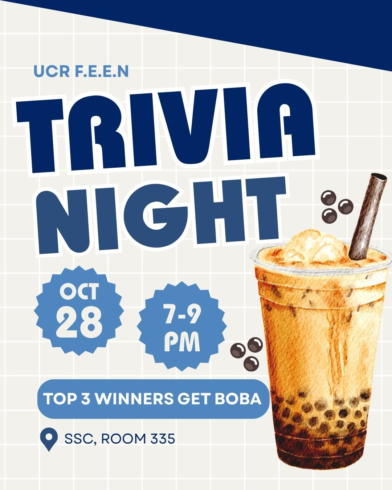

Hi, I’m Ava, a second-year college student on the pre-business track with a passion for connecting people, ideas, and causes through creative marketing. I’m driven by a simple belief: good communication can turn small efforts into real change, and I want a career that lets me do both, building strong brands and making a positive impact. My path started well before college. As a Girl Scout, I learned early that leadership isn’t about being in charge; it’s about showing up, listening, and getting things done alongside other people. Through Girl Scouts, I completed many hours of community service, from organizing projects to supporting local causes. Those experiences taught me responsibility, teamwork, and how to turn an idea into a plan others want to join.
One of the projects I’m most proud of is raising money to provide school supplies for children in the Philippines. Many students ther That lesson shaped my interest in business, and especially in marketing. My strongest skills are in social media marketing and digital advertising. I enjoy figuring out what makes people stop scrolling, what makes a message resonate, and how a brand can build trust with its audience. I’m comfortable creating engaging content, planning campaigns, and thinking about how to reach the right people on the right platform. I’m also curious about the data side of marketing, like understanding engagement, audience behavior, and what makes a campaign work, because creativity is strongest when it’s backed by insight.e lack basic materials like notebooks, pencils, and backpacks, things that are easy to take for granted but make a real difference in a child’s ability to learn. Leading this effort meant setting goals, spreading the word, motivating supporters, and following through so the money turned into supplies that reached the kids who needed them. It showed me how powerful storytelling can be. When people understand why a cause matters, they are far more willing to act. That lesson shaped my interest in business, and especially in marketing. My strongest skills are in social media marketing and digital advertising. I enjoy figuring out what makes people stop scrolling, what makes a message resonate, and how a brand can build trust with its audience. I’m comfortable creating engaging content, planning campaigns, and thinking about how to reach the right people on the right platform. I’m also curious about the data side of marketing, like understanding engagement, audience behavior, and what makes a campaign work, because creativity is strongest when it’s backed by insight.
As a pre-business student, I’m building a foundation in economics, math, and management that complements my hands-on marketing skills. My coursework challenges me to think analytically, while my service work keeps me grounded in why I want to work in business at all: to create value for people, not just for a bottom line. What sets me apart is the combination of heart and strategy. I know how to organize a community effort, and I know how to promote it effectively. I bring dependability, creativity, and a strong work ethic to every team I join, and I’m always eager to learn from others and take on new challenges. Outside the classroom, I continue to look for ways to give back and grow. Whether I’m planning a social media campaign, volunteering, or collaborating on a group project, I try to approach each opportunity with curiosity and a willingness to put in the work. I’m currently seeking internships, leadership opportunities, and projects where I can apply my marketing skills, learn from experienced professionals, and contribute to something meaningful. If you’d like to collaborate or learn more about my work, I’d love to connect.
• Director of outreach, marketing, and advertising
• Organized guest speakers from prominent companies to present for UCR students, organized social events
• Coordinated social media posts
• Spokesperson for multiple events



